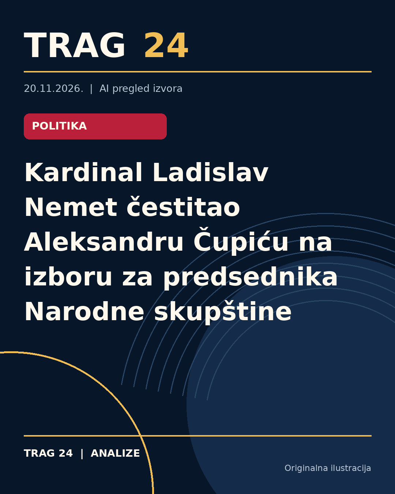

Kardinal Ladislav Nemet čestitao Aleksandru Čupiću na izboru za predsednika Narodne skupštine

ŠTA SE DOGODILO
Kardinal i beogradski nadbiskup Ladislav Nemet uputio je čestitke Aleksandru Čupiću povodom njegovog izbora za predsednika Narodne skupštine Republike Srbije.
HRONOLOGIJA
Nakon održane konstitutivne sednice Narodne skupštine, na kojoj je izabran Aleksandar Čupić za predsednika, Kardinal Nemet je putem saopštenja na sajtu Beogradske nadbiskupije izrazio svoje čestitke i želje za uspešan rad.
ŠTA NAVODE IZVORI
Svi izvori, Nova.rs, N1 i Danas, prenose obimno i identično saopštenje Kardinala Nemet-a u kojem on Čupiću želi mudrost, odgovornost i snagu za obavljanje njegove funkcije. Naglašava važnost Narodne skupštine kao mesta istinskog dijaloga, međusobnog poštovanja i zalaganja za opšte dobro. Takođe, Kardinal ističe vrednosti pravde, mira, solidarnosti i jednakosti koje treba da povezuju sve građane, bez obzira na nacionalnu, versku ili drugu pripadnost, uz poštovanje dostojanstva svakog čoveka.
ŠTA JE POTVRĐENO
Potvrđeno je da je Aleksandar Čupić izabran za predsednika Narodne skupštine. Takođe, potvrđeno je da je kardinal i beogradski nadbiskup Ladislav Nemet uputio čestitku Čupiću sa porukom podrške i željama za uspešan rad, izdato u saopštenju na zvaničnoj stranici Beogradske nadbiskupije.
ŠTA NIJE POTVRĐENO
U dostupnim izvorima nema detalja o samom izboru, okolnostima glasanja niti reakcijama ostalih učesnika u Skupštini. Takođe, nema dodatnih informacija o daljim planovima Aleksandra Čupića kao predsednika Narodne skupštine.
ŠTA OSTАJE OTVORENO: Ostaje nepoznato kako će se konkretno održavati dijalog i međusobno poštovanje unutar Skupštine tokom Čupićevog mandata. Nije poznato ni kako će se vrednosti istaknute u čestitki Nemet-a realizovati u politici i zakonodavstvu u narednom periodu.
Izvori
- https://nova.rs/vesti/drustvo/kardinal-i-beogradski-nadbiskup-ladislav-nemet-cestitao-cupicu-na-izboru-za-predsednika-skupstine/
- https://n1info.rs/vesti/kardinal-i-beogradski-nadbiskup-ladislav-nemet-cestitao-cupicu-na-izboru-za-predsednika-skupstine/
- https://www.danas.rs/vesti/politika/kardinal-i-beogradski-nadbiskup-ladislav-nemet-cestitao-cupicu-na-izboru-za-predsednika-skupstine/
Ova analiza je pripremljena uz pomoć veštačke inteligencije na osnovu javno dostupnih izvora. Navodi izvora nisu nužno nezavisno potvrđeni.